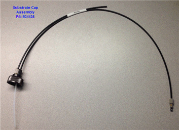
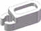

Replacing Substrate Cap Assembly
Required Materials:
- Standard tool kit
- Substrate cap assembly

- Alcohol swabs or Citrinox on lint-free tissue
- CnS wrench (optional): PN B26294 Tool, Wrench, CnS, 1/4-28 – For use with CnS connectors. CnS connectors can be difficult to turn by hand (because of the location of the connector or the hand strength of the individual FSE).
